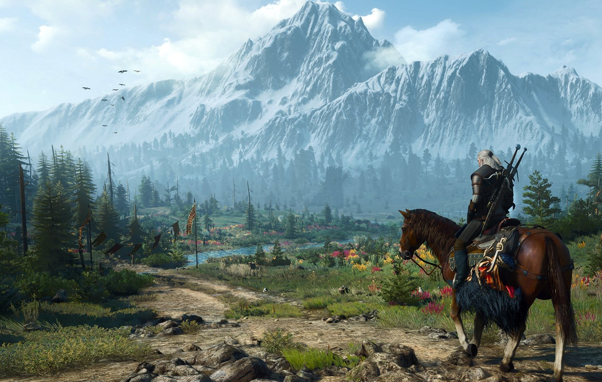
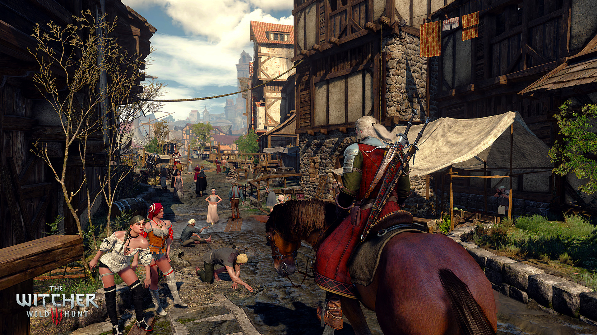
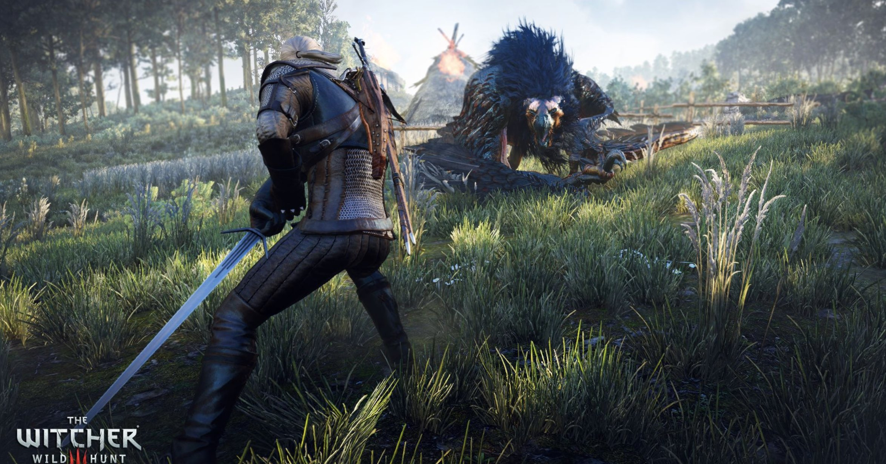
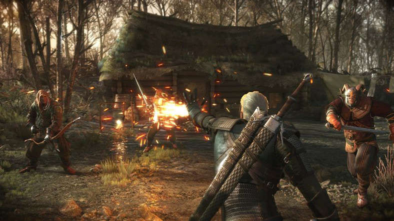

The Witcher 3: Wild Hunt, CD Projekt RED tarafından geliştirilen, Warner Bros. Interactive Entertainment tarafından Kuzey Amerika'da, Namco Bandai Games tarafından ise Avrupa'da yayımcılığı yapılan üçüncü şahıs nişancı türü aksiyon rol yapma oyunudur. Oyun The Witcher 2: Assassins of Kings'in devamı olarak 19 Mayıs 2015'te yayınlanmıştır ve serinin son oyunudur. Serinin diğer oyunları gibi Andrzej Sapkowski'nin The Witcher serisine dayanmaktadır. Yayınlandıktan altı hafta sonra 6 milyondan fazla kopya satmıştır ve Golden Joystick Awards, The Game Awards, Game Developers Choice Awards, ve SXSW Gaming Awards dahil olmak üzere 250'den fazla site tarafından yılın oyunu seçilmiştir. 2021 yılı itibarıyla 30 milyondan fazla kopya satmış, 2022 yılı itibarıyla bu sayıyı 40 milyona çıkartarak tüm zamanların en çok satan video oyunlarından biri haline gelmiştir.

The Witcher 3: Wild Hunt, serinin diğer oyunları gibi Rivyalı Geralt'ın hikâyesini konu alır. İkinci oyunun sonunda yaşanan olayların üzerinden altı ay geçer ve Geralt'ın hafızası yerine gelir. Hafızasını geri kazanan Geralt, kayıp aşkı Yennefer'ı aramaya başlar. Ardından Ciri'yi geri getirmek için Emhyr var Emreis'den hayatının en büyük kontratını alır ancak bu hiç kolay olmayacaktır. Çünkü Ciri'nin peşinde Wild Hunt vardır.

Oyun, Slav mitolojisine dayanan kurgusal bir fantezi dünyası olan, paralel boyutlar ve ekstra boyutlu dünyalarla çevrili bir kıtada geçiyor. Kıtada insanlar, elfler, cüceler, canavarlar ve diğer yaratıklar bir arada yaşar, ancak insan olmayanlara farklılıkları nedeniyle sıklıkla zulmedilir. Kıta, kuzey krallığını işgal eden ve İmparator Emhyr var Emreis tarafından yönetilen Nilfgaard İmparatorluğu ile Kral Radovid V. tarafından yönetilen Redanya arasındaki savaşa sahne olmaktadır. Oyun, Özgür Şehir Novigrad, Redanya şehri Oxenfurt, Sahipsiz Topraklar Velen, yakın zamanda fethedilmiş olan Temerya'nın eski başkenti Vizima, Skellige Adaları (birkaç İskandinav-Gaels Viking klanına ev sahipliği yapan bölge) ve Witcher Kalesi Kaer Morhen de dahil olmak üzere çeşitli bölgelerin yer aldığı bir dünyada geçer.

Ana karakter Witcher Rivyalı Geralt, çocukluğundan beri savaş, iz sürme, simya ve sihir konusunda eğitilmiş ve mutajenler tarafından toksinlere karşı daha güçlü, daha hızlı ve dirençli hale getirilmiş bir canavar avcısıdır. Sevgilisi güçlü büyücü Vengerberg'li Yennefer, eski sevgilisi Triss Merigold, ozan Dandelion, cüce savaşçı Zoltan Chivay ve Geralt'ın bir başka witcher olan akıl hocası Vesemir tarafından desteklenmektedir.
Geralt, kendisinin ve Yennefer'in evlatlık kızı Ciri'nin yeniden ortaya çıkmasıyla harekete geçer. Ciri, doğuştan gelen ve potansiyel olarak büyülü yeteneklerle donanmış bir özel bir türdür. Ebeveynlerinin ölümünden sonra, bir witcher olarak eğitilirken bir yandan da Yennefer'ın hocalığında sihir yeteneklerini geliştirmiştir. Ciri, Eredin liderliğindeki bir grup spektral savaşçı olan Vahşi Av'dan kaçmak için yıllar önce ortadan kaybolmuştu.

Oyun, bir açık dünya oyunudur. Wild Hunt'ın haritası, önceki oyunlarına göre yaklaşık 30 kat daha büyüktür. Ayrıca bir başka açık dünya oyunu olan Grand Theft Auto V'dan ise 1.5 kat büyüktür. Haritanın bir ucundan diğer ucuna at ile gitmek yaklaşık 40 dakika sürmektedir. Oyunda at, tekne kullanma gibi özelliklerin yanı sıra "Fast-Travel" adı verilen hızlı seyahat yapma imkânı da vardır. Bu sayede oyuncular önceden gittikleri bölgelere zaman kaybetmeden hızlı bir şekilde gidebilmektedir. Oyunun ana görevleri yaklaşık 50 saat sürmekle beraber yan görevlerle birlikte bu süre 100 saati bulabilmektedir. Oyuncunun verdiği kararlara göre değişen 3 büyük son ile birlikte toplam 36 farklı son bulunmaktadır. Sadece yere basarken değil at üzerindeyken de dövüş mekaniklerini kullanmak mümkün. Aynı zamanda oyunda dinamik gece/gündüz döngüsü bulunmaktadır. Oyunun yayınlandıktan sonra iki adet ek paket yayımlamış, bu ek paketlerle birlikte oyuna yeni karakterler ve hikâyeler eklenmiştir.

CD Projekt RED, 7 Nisan 2015 tarihinde Hearts of Stone ve Blood and Wine isimli iki genişleme paketi çıkaracaklarını duyurdu. Hearts of Stone 13 Ekim 2015'te, Blood and Wine ise 31 Mayıs 2016'da yayınlandı.
CD Projekt RED, 7 Nisan 2015 tarihinde Hearts of Stone ve Blood and Wine isimli iki genişleme paketi çıkaracaklarını duyurdu. Hearts of Stone 13 Ekim 2015'te, Blood and Wine ise 31 Mayıs 2016'da yayınlandı.
İlk genişleme paketi Hearts of Stone'da Geralt'ın gizemli bir ölümsüz olan Olgierd ve Man of Glass ile karşılaşması konu alınıyor. Hearts of Stone yurt dışında GameSpot ve IGN gibi önemli sitelerden 9/10 puan aldı. Türkiye'de ise Oyungezer bu genişleme paketine 9/10 puanını verdi.
İkinci ek paket, Blood and Wine ise Geralt'ın Toussaint isimli, Güney Fransa'dan esinlenerek tasarlanmış bir bölgeye seyahatini konu alıyor. Savaşlardan uzak bir bölgede yer alan Toussaint tüm yıkımlardan kurtulmuş bir bölge olarak öne çıkıyor. Geralt, burada düklüğe zarar veren ve halkı katleden bir vampir çetesini durdurmaya çalışıyor. Blood and Wine'a IGN 9/10, GameSpot ise 8/10 puan verdi.

The Witcher 3: Wild Hunt, birçok site tarafından olumlu eleştiriler aldı. Oyunun Windows sürümü Metacritic sitesinden 93/100, PlayStation 4 92/100, Xbox One'da ise 91/100 puan aldı.
